가야고분군은 박물관 안의 유물이 아니라 마을과 들판, 현대의 건물에 맞닿은 지형이다. 사람들이 걷고 놀고 오가는 일상 속에 봉분이 자리한다.
사람이 프레임에서 사라지면 나무와 안개, 빛이 같은 언덕의 표정을 바꾼다. 이 연작은 오랜 시간을 품은 고분이 오늘의 삶과 만나는 모습을 바라본다.
The Gaya tumuli are not objects enclosed in a museum, but part of a landscape that meets villages, fields, and modern buildings. The burial mounds remain within the everyday spaces where people walk, play, and pass by.
When people leave the frame, trees, mist, and light transform the appearance of the same hills. This series looks at how these ancient burial mounds, carrying the passage of time, meet the life of the present.
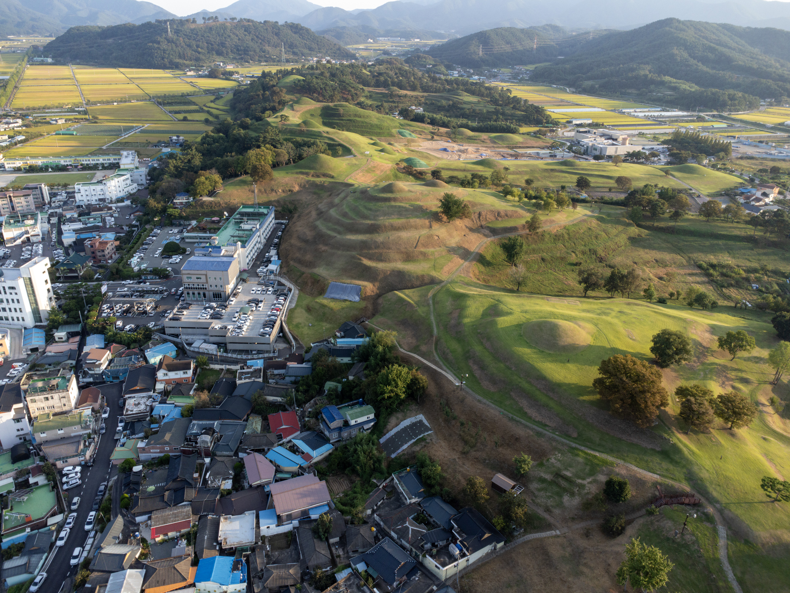
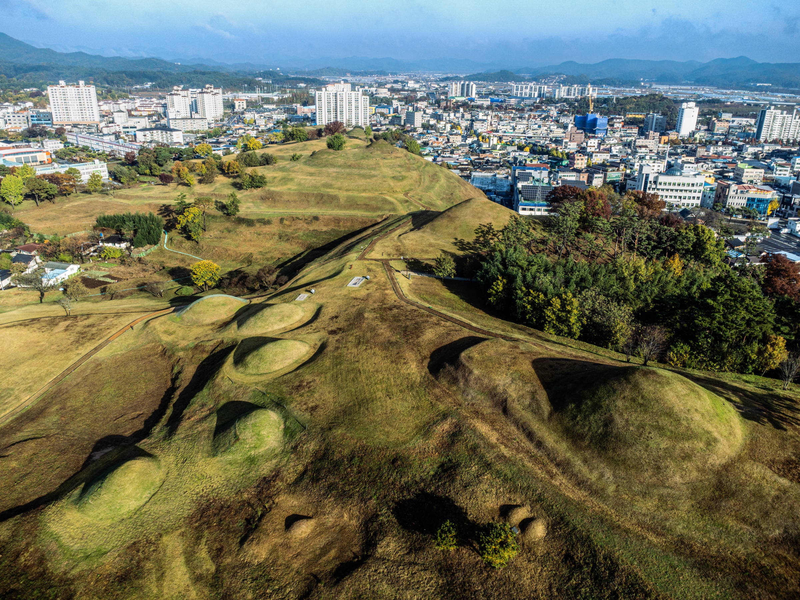
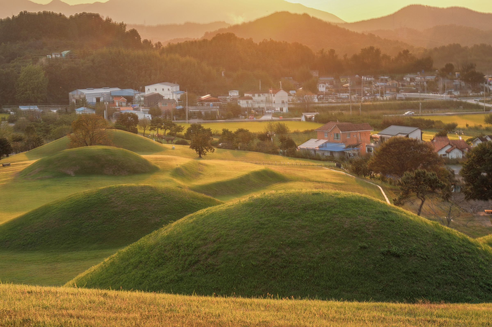
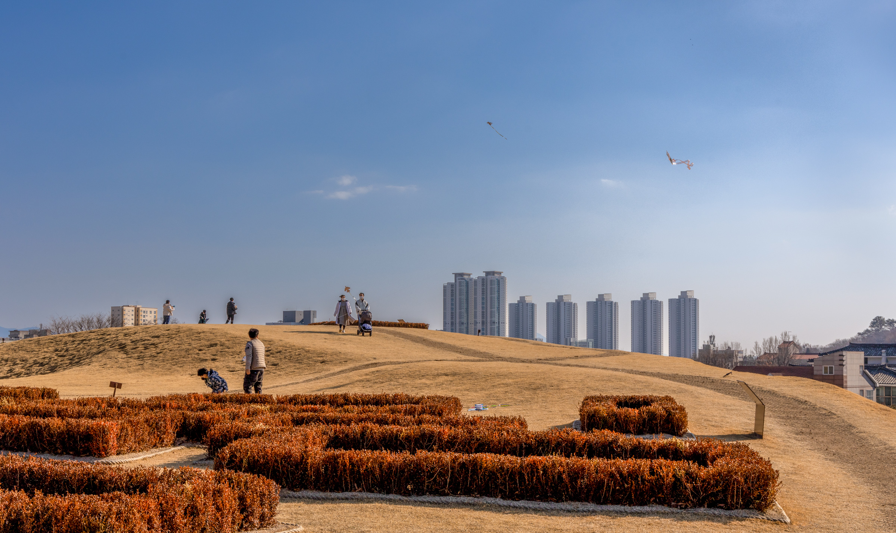
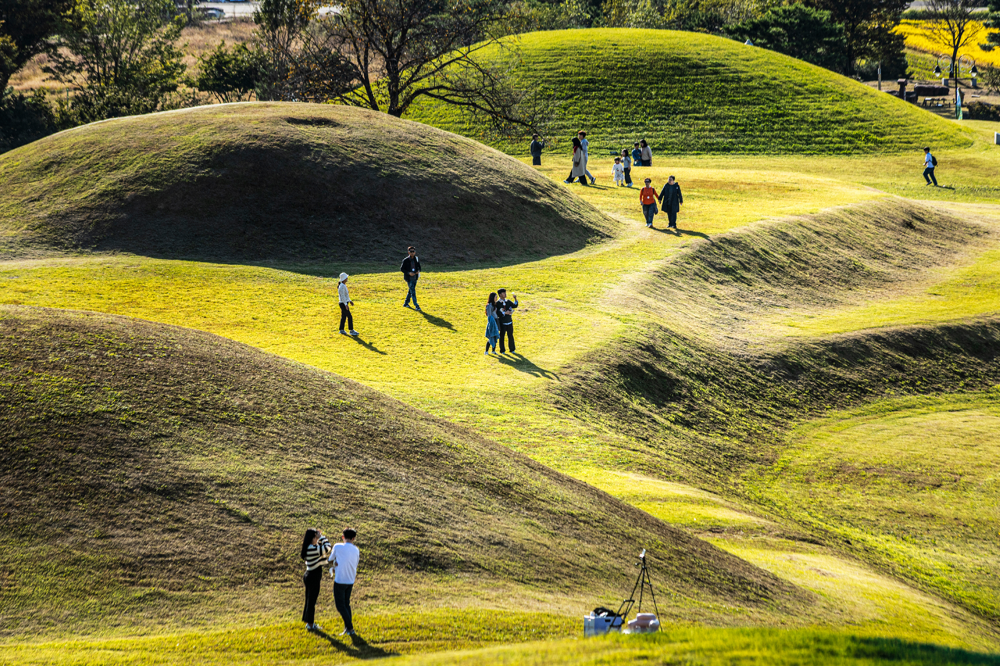
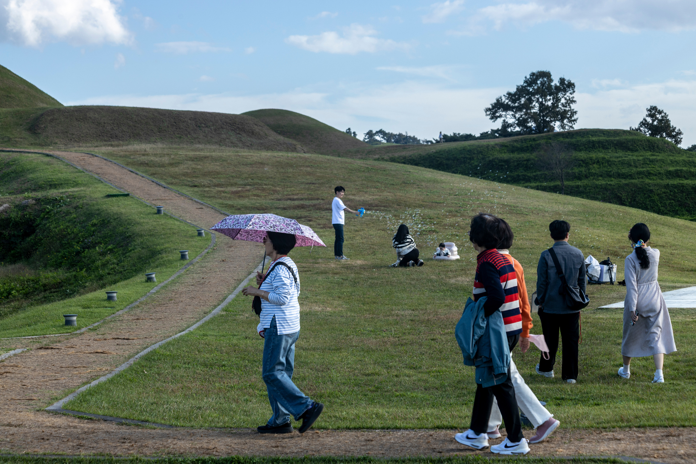
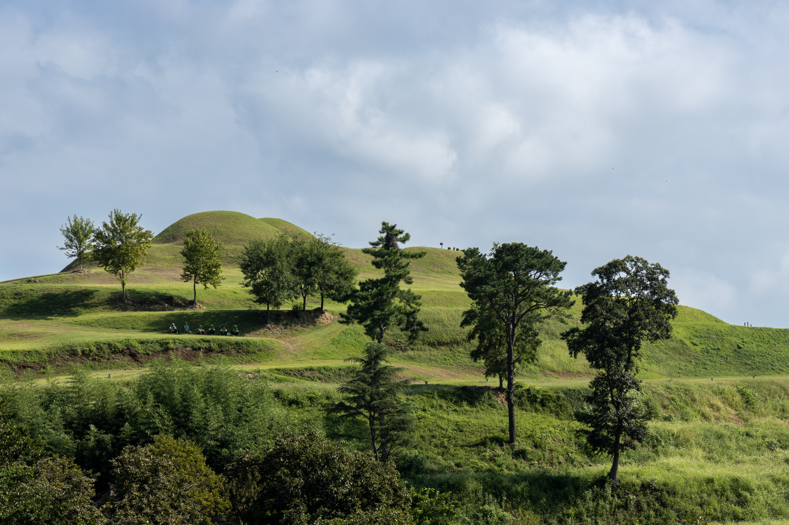
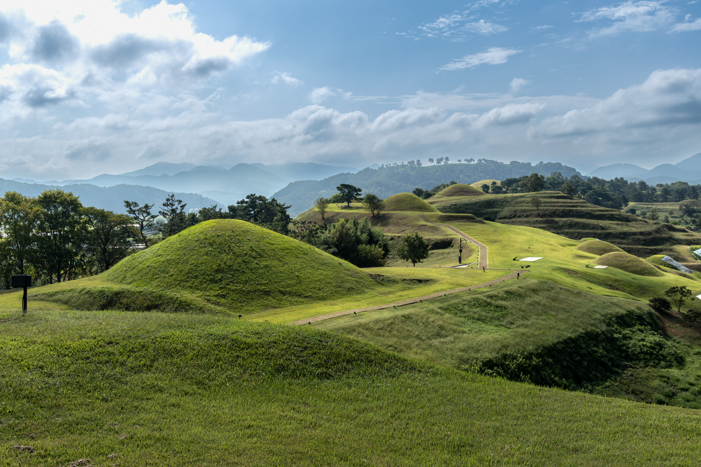
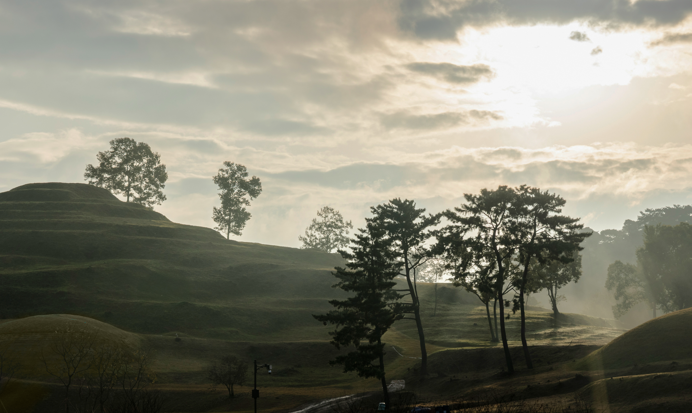
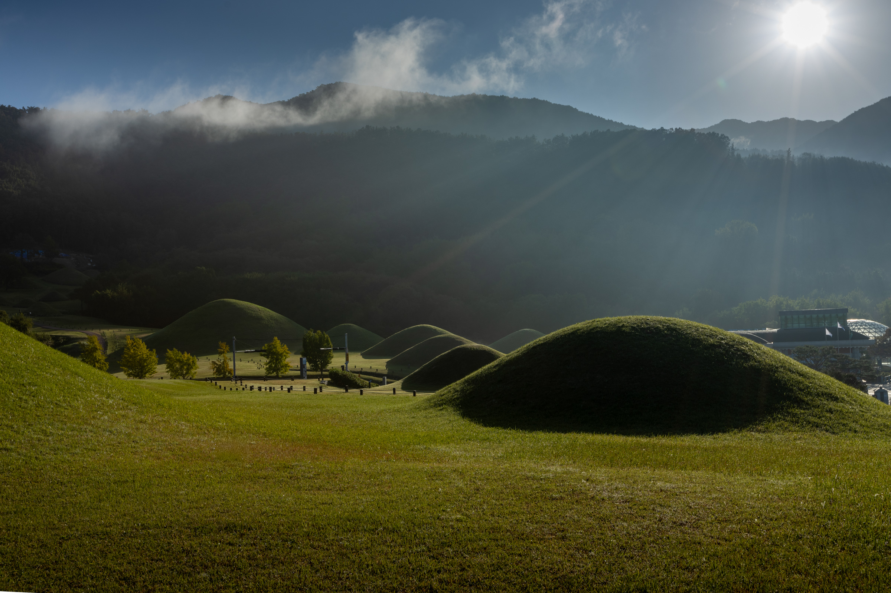
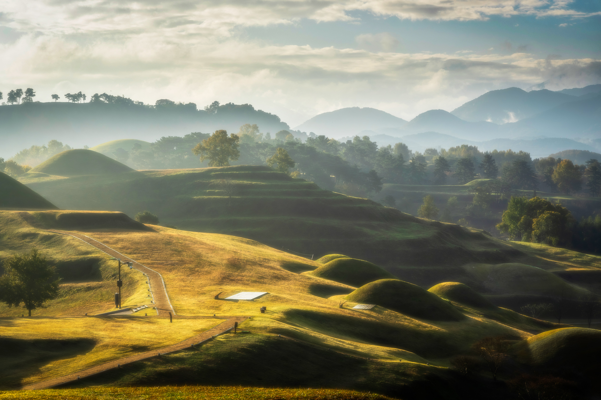
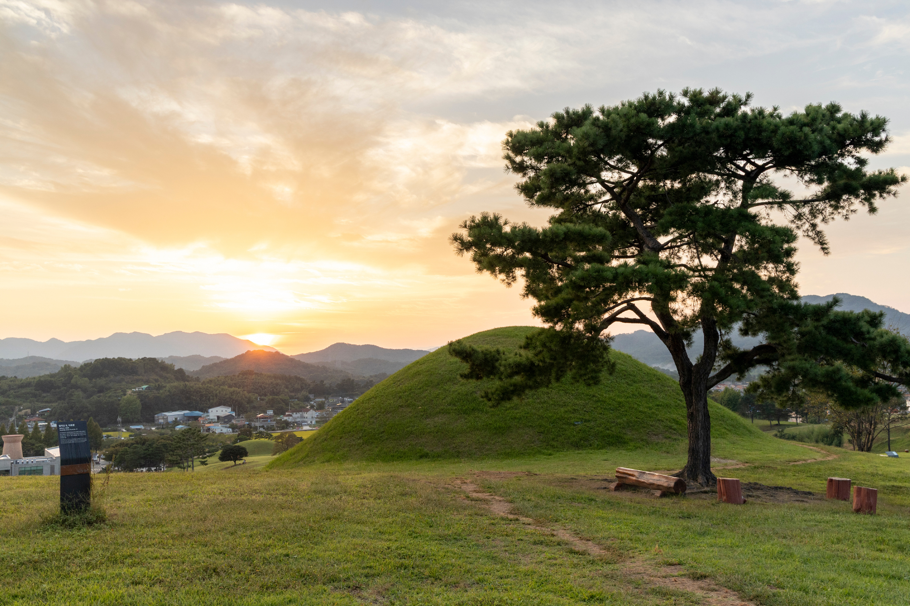